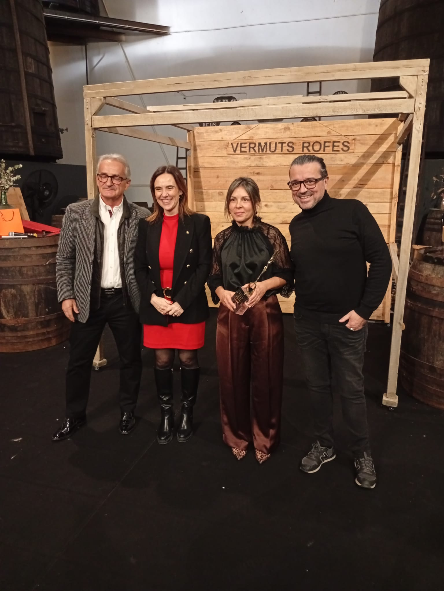
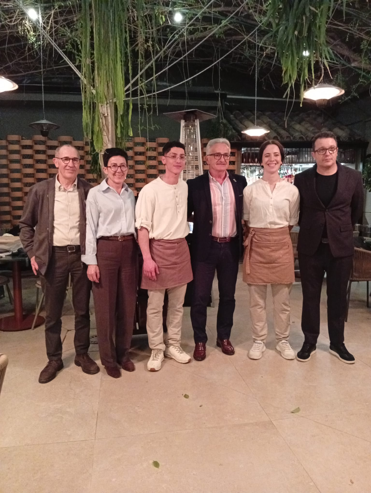
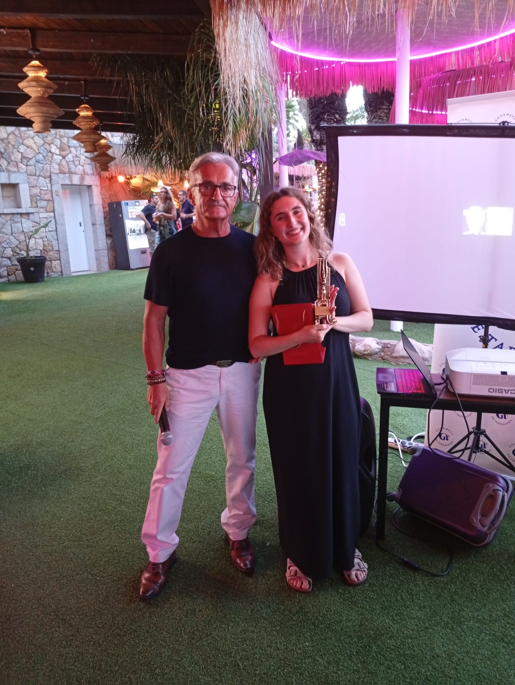
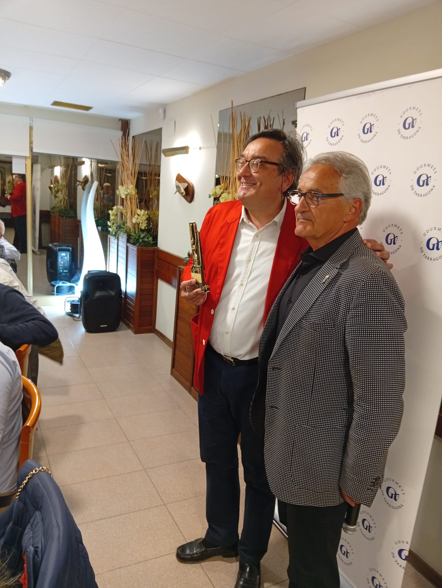
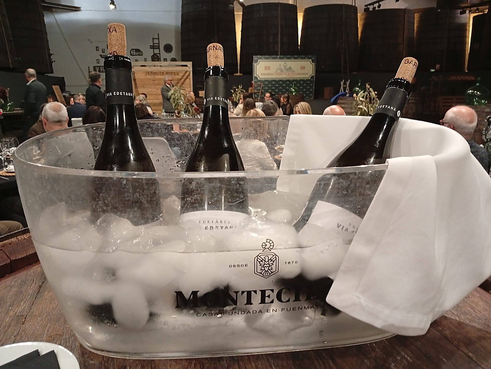
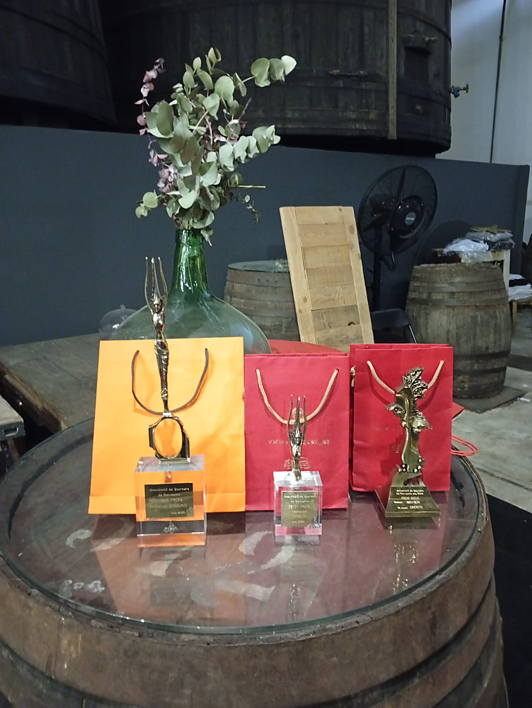

Els nostres socis
Gourmets de Tarragona · Visita Kema, Cambrils · Març 2026
Juan Manuel Rodríguez Yarritu
Jacob Folch Roma
Vicente Guillén Mejías
Eloi Gonzalbo Tarragó
Vicente Baquero Rosario
Dámaso Molina Sereno
Ángeles Muñoz





